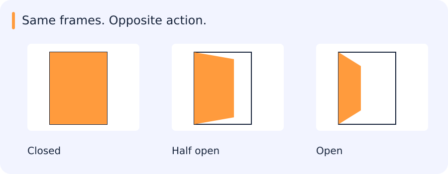

Same frames. Opposite action.
An opening door and a closing door can contain the same frames in reverse order. Averaging frame features can erase the difference.

| Notice | Interpret | Check |
|---|---|---|
| Forward: opening | Reverse: closing | Average: same unordered evidence |
Reveal the catch
Time order is part of the input, not decoration around an image model.
Try it in 60 seconds: Reverse a clip. Which baseline predictions should change, and which cannot?
Read for understanding, not page completion. Skip what you can already explain.
Jump to a concept
Time changes the task
A frame model sees appearance at one time. A video model may need action order, duration, motion and interactions. A sequence has timestamps, sampling rate and possibly gaps. Uniformly taking every tenth frame means a different temporal interval at different frame rates. Define whether the output is per clip, per frame, per track or an event with start/end boundaries.
Recurrent state
A basic recurrent network updates h_t = phi(W_x x_t + W_h h_(t-1) + b). The hidden state summarizes earlier inputs. Backpropagation through time multiplies derivatives along temporal paths; repeated contraction can make gradients vanish and expansion can make them explode. Clipping limits excessive gradient norms but does not create missing long-term information.
An LSTM maintains a cell state and gates controlling forgetting, new information and output. A common update is c_t = f_t*c_(t-1) + i_t*g_t, then h_t = o_t*tanh(c_t), with sigmoid gates and elementwise products. The additive path can support longer-term gradients but does not guarantee perfect memory. A GRU combines state/gating more compactly, commonly using update and reset gates. Different formulas and gate conventions exist; inspect the implementation before mapping named gates.
A bidirectional network uses past and future context. It is appropriate for a complete recorded clip but introduces future dependence in a live setting. Truncated backpropagation limits the training horizon. Resetting or carrying state across clip boundaries changes the task and can leak information between examples. Padding and masks must prevent variable-length batches from treating padding as observed content.
Video representations
A frame encoder with temporal pooling is a simple baseline. It can recognize static context but may discard order: opening and closing a door can have similar pooled features. A 3D convolution filters across space and time, while factorized spatial/temporal layers trade capacity and cost. Two-stream approaches combine appearance and motion representations such as optical flow, whose preprocessing has its own failure modes and compute. Temporal attention can connect distant frames but requires explicit timing/position and can be expensive with many spatial tokens.
Sampling and realistic evaluation
Short clips can miss rare events; long clips increase context but mix irrelevant content. Sample using the deployment event duration, preserve actual timestamps and evaluate sensitivity to speed and gaps. Split by source video/session/camera as appropriate. Random frame splits reward memorizing backgrounds. Report latency from observed input to a decision, not just the model forward time. A clip-level score does not establish accurate event boundaries or stable online alerts.
For tracklets, consider identity switches, missing detections and camera motion. For event systems, define when repeated detections become one event and how cooldown periods affect precision and recall. A person appearing in many adjacent frames should not count as dozens of independent successes. Include empty scenes, partial actions and camera transitions among qualitative cases.
Pseudo-labels and teacher models
A strong teacher can generate candidate annotations at scale, but its errors become training data. Audit randomly selected frames as well as high-confidence proposals so missed objects become visible. Keep teacher identity, prompt, confidence filters and export geometry with the dataset version. Do not evaluate on the same unverified pseudo-labels used for training. Measure the student on independently checked frames from held-out videos.
Connection to this program
The ordinary-camera assignment is separate from satellite/airborne imagery. Build a bounded clip baseline, then respond to staged product changes and identify which assumptions break. In the RabbitMQ/SAM3 project, verify retries and durable outputs before scaling a batch, then train one selected detector. Use the agent to challenge your sampling and event definitions; demonstrate the resulting behavior yourself on a new clip.
Original source references and provenance
Original teaching text covering the cited topics, not a verbatim mirror. These references are provenance; no external reading is required to use this chapter.